Open the public demo to review the provider-neutral Dashboard, backend and store configuration, mapping screens, queue monitoring, synchronization states, and issues.
The demo account is read/write for disposable demo records only. It does not expose API secrets, database access, or production data.
Shared foundation
One integration core. Multiple compatible connectors.
eCommerce Integration Core is the free, provider-neutral foundation for native Odoo eCommerce connectors. It provides the configuration, mapping, synchronization, security, and monitoring layer that connector modules build on.
Important: this module does not connect to Magento, Shopify, or any other platform by itself. It is a dependency. Install a compatible connector such as Magento Connector for Odoo to synchronize external data.
What the core gives you
Backend & store identity
Separate external systems, websites, store views, companies, warehouses, currencies, and job users without mixing records.
Store-scoped mappings
Persistent links for products, variants, attributes, categories, customers, orders, invoices, payments, shipments, refunds, carriers, payment methods, and inventory sources.
Synchronization state
Incremental cursors, last success, last error, and status per store and resource. Replays are designed to be safe and idempotent.
OCA queue_job orchestration
Slow API work runs in bounded background coordinator and child jobs with channels, retry policies, deduplication keys, progress runs, and a company-scoped integration user. A provider-neutral Sync to eCommerce product wizard queues explicit Export or Update operations, while Sync Now covers catalog, orders, inventory, shipments, and financial documents.
Operational monitoring
Events, actionable issues, and mapping records make synchronization observable instead of hiding failures in logs.
Security & isolation
Role-based access, manager-only credentials, company record rules, and least-privilege queue execution.
Designed for connector developers and administrators
A connector adds the platform-specific API adapter and workflows. The core keeps shared behaviour consistent across connectors, so administrators learn one configuration and monitoring model.
Configure once
Create a backend, one or more stores, and the mappings required by the connector.
Run safely
Trigger synchronization or let crons enqueue bounded jobs. Monitor every queued operation.
Diagnose quickly
Review sync states, events, and issues with stable fingerprints instead of duplicating the same error.
Provider architecture
A stable core, a thin connector layer
The Core owns configuration, mappings, synchronization state, queue orchestration, security, and monitoring. A provider connector contributes the platform API client and resource-specific workflows.
External eCommerce platform→Provider connector→eCommerce Core→OCA queue_job→Odoo records
Backend
One external system, one company scope, credentials, provider capabilities, and a dedicated integration user.
Store
Website, store view, warehouse, stock location, currency, automation, batch sizes, and scheduling for one sales channel.
Mapping
Persistent external-to-Odoo links for products, variants, customers, orders, shipments, invoices, payments, refunds, and supporting configuration.
Sync state
Per-store, per-resource cursors and last-success evidence. Replays are designed to be idempotent.
Queue
Bounded coordinator and child jobs, channels, deduplication keys, retry patterns, run progress, and company-scoped execution.
Observe
Dashboard KPIs, events, issues, failed-job visibility, store health, and mapping drill-down for daily operations.
eCommerce Dashboard
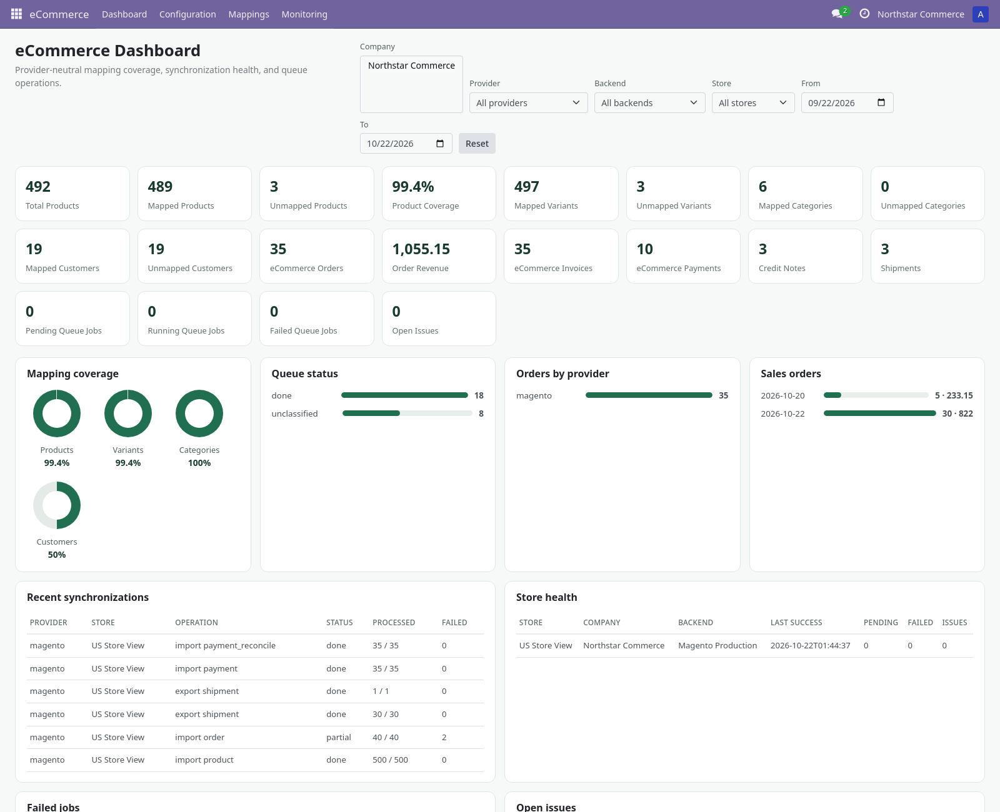
Provider-neutral dashboard with company-scoped KPIs, mapping coverage, queue health, recent synchronization runs, failed jobs, open issues, and store health.
The Dashboard belongs to the free core. It works with core and OCA queue_job alone, shows honest empty states before a provider is configured, and never calls an external API. Provider connectors contribute through the generic capability and mapping contracts.
Real screens from the core
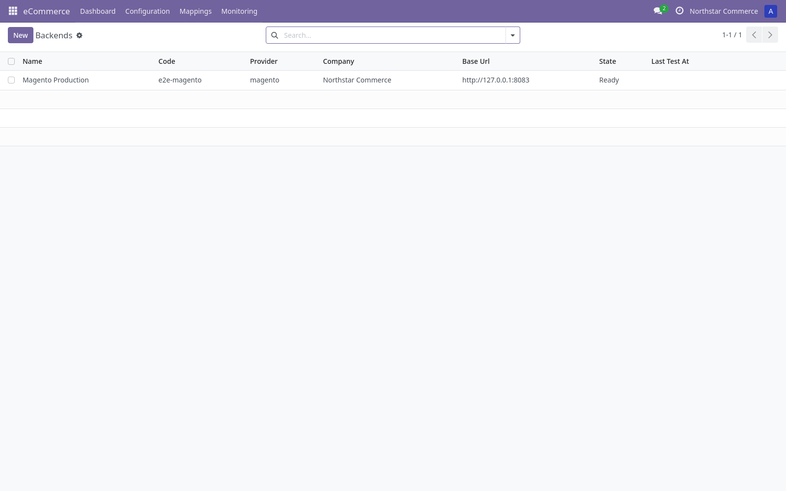
Backend configuration with connection state, credentials masked, capabilities, and a dedicated job user.
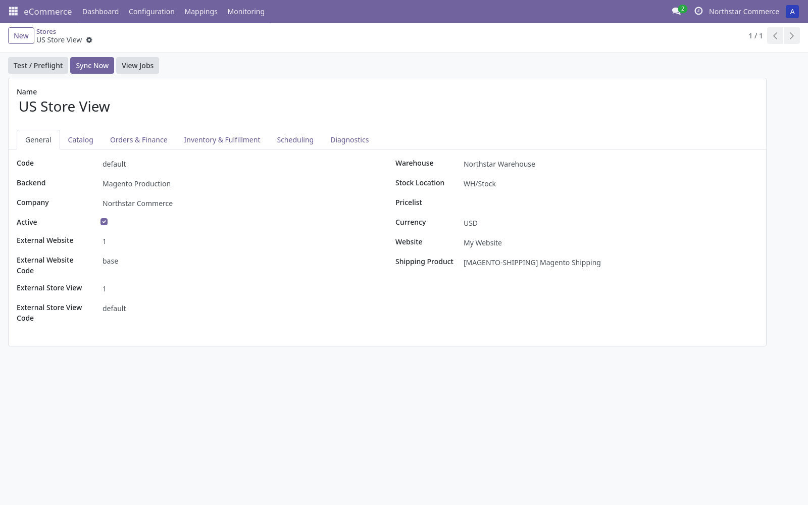
Store scope with three primary actions: Test / Preflight, Sync Now, and View Jobs. Configuration is grouped into General, Catalog, Orders & Finance, Inventory & Fulfillment, Scheduling, and Diagnostics.
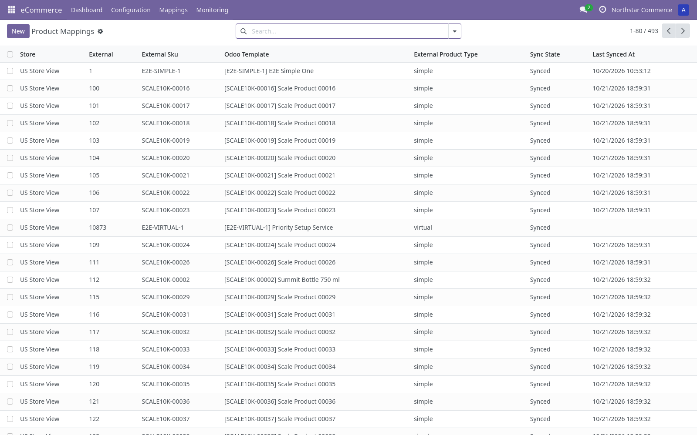
Store-scoped product mappings with external identity, SKU, Odoo template, type, and sync state.
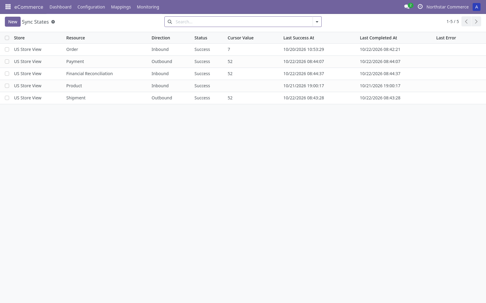
Per-resource cursors and last-success evidence for each store.
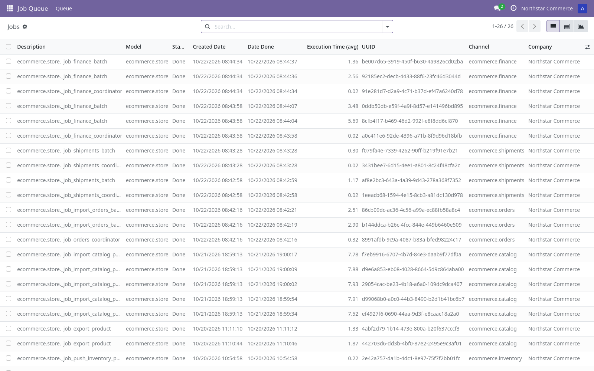
Background jobs executed through OCA queue_job, including retries and completion evidence.
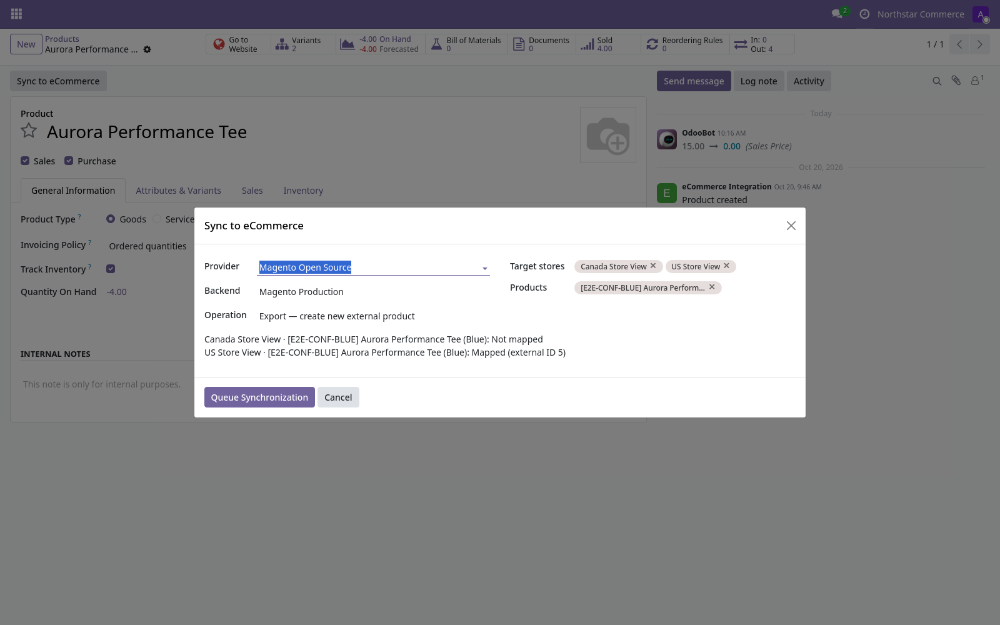
Provider-neutral Sync to eCommerce wizard from the free core: provider, backend, target store, Export or Update, and queued execution.
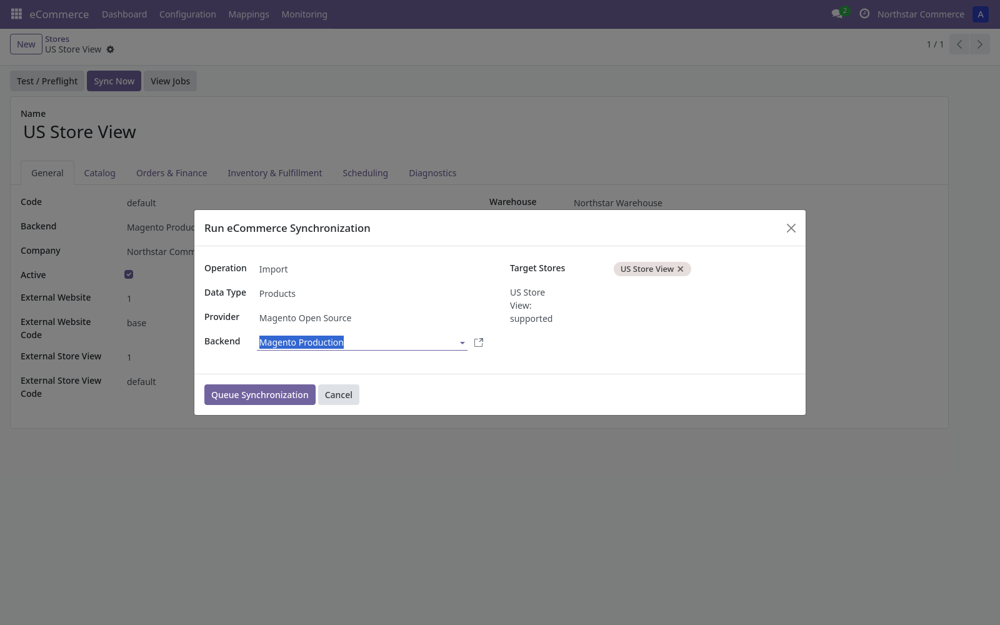
Store Sync Now workflow: choose Import, Export, or Update; select a supported data type; confirm the provider, backend, and stores; then queue the job.
Core screens
Company-scoped eCommerce Dashboard with mapping coverage, queue status, orders, revenue, recent runs, store health, and issues.Backend list with provider, company, base URL, connection state, and last test.Store scope with company, warehouse, currency, external website/store view, and provider actions.Store-scoped product mappings with external identity, SKU, Odoo product, type, and sync state.
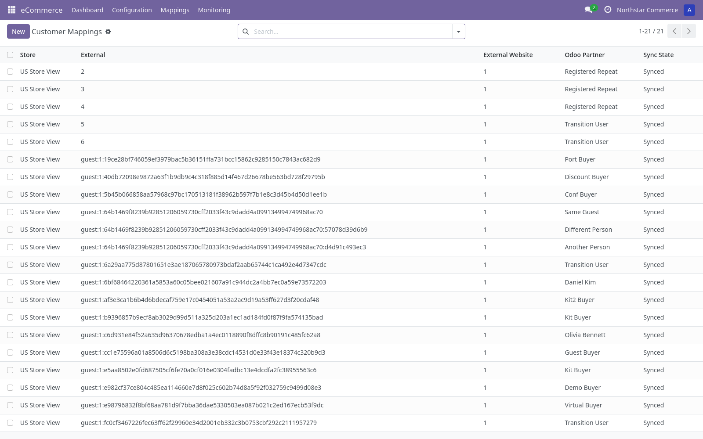
Customer mappings linking external customers and guest identities to Odoo partners.
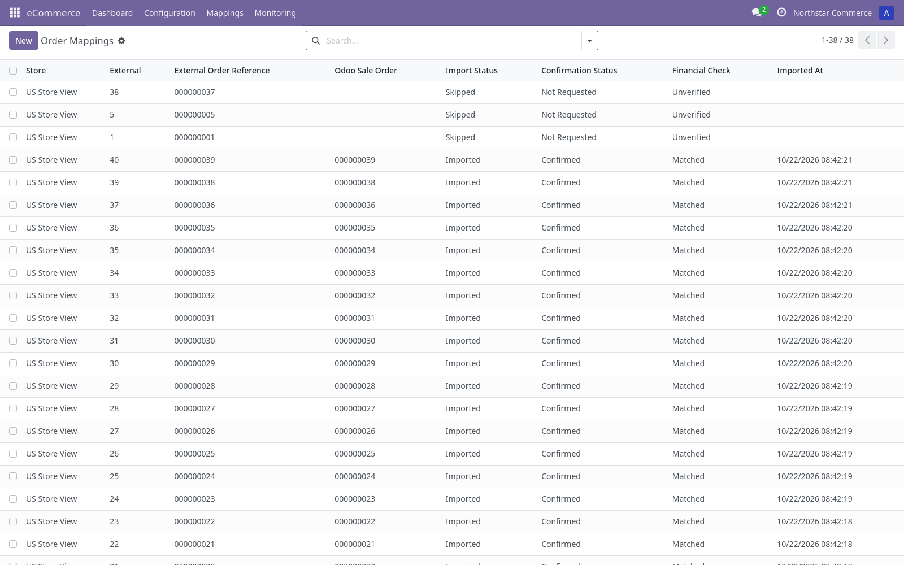
Order mappings with Magento increment ID, Odoo sale order, financial check, and import state.Per-resource cursors and last-success evidence, scoped by store.OCA queue_job execution with channel, state, timing, user, and UUID.Provider-neutral Sync to eCommerce wizard for explicit Export or Update operations. Verification capture: Odoo 19.Store Sync Now wizard with operation, data type, provider, backend, and target stores.
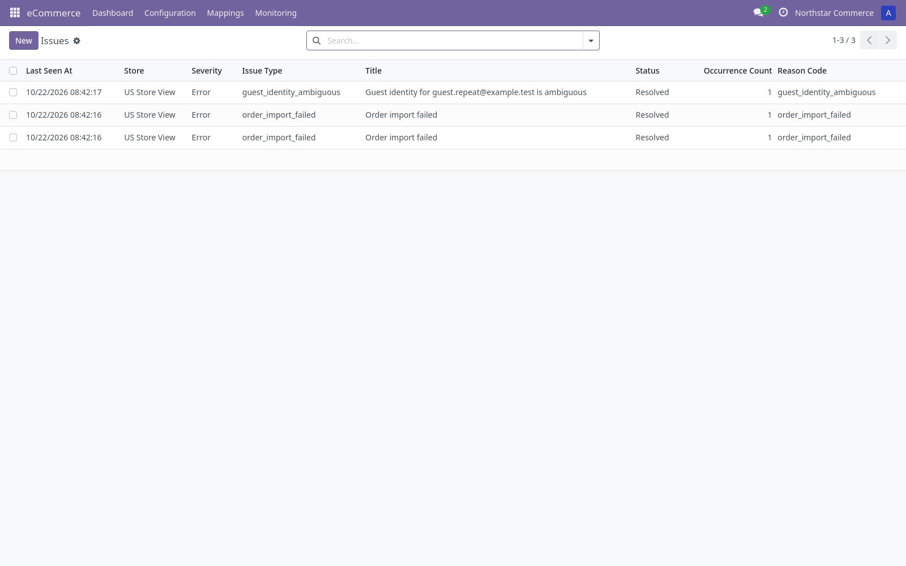
Actionable synchronization issues with stable fingerprints and occurrence counts.
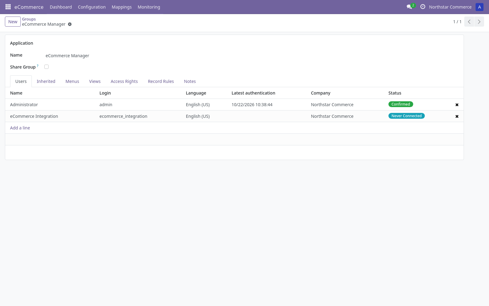
Role-based access separates users, operators, and managers; credentials remain manager-only.
Installation
1. Install OCA queue_job
Clone the OCA/queue repository on the branch matching your Odoo version (17.0, 18.0, or 19.0). Add the repository root to addons_path; install queue_job from Apps.
2. Add this repository to addons_path
This repository is a container for the addon. Add the repository root (the folder containing the nested odoo_ecommerce_integration addon), not the nested folder itself:
Restart Odoo, activate developer mode if needed, select Apps → Update Apps List, then install eCommerce Integration Core.
4. Install a connector
The core alone does not synchronize data. Install a compatible paid connector (for example Magento Connector for Odoo) and follow its setup guide.
5. Configure and run
Open eCommerce → Configuration → Backends and Stores. Create mappings as required by the connector. Ensure the OCA jobrunner is running and review Job Queue → Queue for execution.
Background processing: most connector work is asynchronous. Run Odoo with OCA queue_job loaded and enough workers (or a queue_job runner) so jobs execute. Pending jobs will not process if the runner is stopped.
Core setup and daily use
The Core is provider-neutral, so some fields only become useful after a connector is installed. Complete these steps in order.
Install OCA queue_job. Use the branch matching your Odoo version and load queue_job in the Odoo process.
Install the Core. Add the repository root to addons_path, restart Odoo, update the Apps list, and install eCommerce Integration Core.
Configure users and security. Assign eCommerce User, eCommerce Operator, or eCommerce Manager according to responsibility. Credentials are manager-only.
Create a Backend. Open eCommerce → Configuration → Backends, set the external system code and owning company, and select the integration job user.
Create a Store. Open eCommerce → Configuration → Stores, bind the store to the backend, company, warehouse, stock location, currency, and external store view.
Install a provider connector. The Core alone does not call Magento, Shopify, or another external API. Install the connector that supplies credentials, capabilities, and resource workflows.
Review product, variant, customer, and order mappings. Use eCommerce → Mappings. Mapping scope is always the store; coverage appears on the Dashboard.
Verify queue processing. Open Job Queue → Queue. A pending job means the runner is stopped or channel capacity is unavailable.
Configure schedules. Review the connector's scheduled actions for catalog, customers, orders, inventory, shipments, and finance. Start with conservative batch sizes.
Run a small synchronization. Use the connector's Sync Now or product Sync to eCommerce wizard. Review each queue job and resulting mapping.
Monitor the Dashboard. Check mapping coverage, queue health, recent synchronization runs, store health, failed jobs, and open issues. Use company and provider filters.
Retry and troubleshoot safely. Fix the underlying configuration or data, inspect the mapping and remote object, then retry the failed job. Do not blindly replay a remote mutation that may have succeeded.
The Core never stores provider business logic. If a screen has no data after install, confirm that a provider connector is installed, a Backend and Store are configured, and the relevant mappings exist.
Requirements
Odoo
17.0, 18.0, or 19.0 on the matching branch
OCA dependency
queue_job from the matching OCA/queue branch
Standard Odoo apps
Sales, Inventory, Accounting/Invoicing, Delivery, Website/eCommerce, Manufacturing (installed as dependencies)
Connector
A compatible provider connector is required for external synchronization
License
LGPL-3
Support
Need help with installation, configuration, or synchronization? Contact our support team at alfatihridhont@gmail.com.
Include your Odoo version, connector version, the exact job or sync-state record, and a sanitized error message. Never send access tokens, passwords, or full customer data.